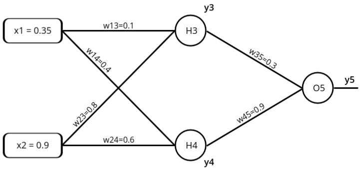
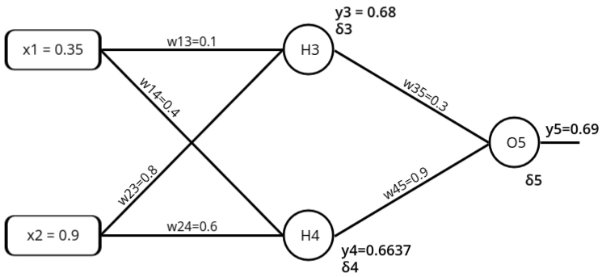
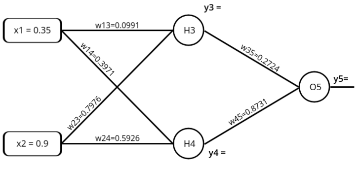

Feed Forward Network
Feedforward neural networks (FNNs) are a class of artificial neural networks (ANNs) where the information
moves in one direction—forward—from the input nodes, through the hidden layers, and finally to the
output nodes. There are no cycles or loops in the network, which is why it's called "feedforward." This
network structure is one of the simplest and most commonly used models in machine learning and deep
learning for a variety of tasks such as classification, regression, and pattern recognition.
Key Components:
- Input Layer: This layer receives the input data. The number of neurons in this layer corresponds to
the number of input features in the dataset.
- Hidden Layer(s): These layers are where computations take place using weights and activation
functions. A feedforward network can have one or more hidden layers, making it either a shallow or
deep neural network. The hidden layers are responsible for extracting and transforming features from
the input data.
- Output Layer: The final layer produces the network's output, which could be a class label (in
classification tasks) or a continuous value (in regression tasks). The number of neurons in the
output layer depends on the task, such as the number of classes for classification.
- Weights and Biases: Weights determine the influence of a particular input on the output, while
biases adjust the output along with the weighted sum of inputs, helping the network fit the data
better.
- Activation Functions: Activation functions (e.g., sigmoid, ReLU, or tanh) introduce non-linearity
into the network, enabling it to learn complex patterns.
Learning Process:
- The training process of an FNN involves adjusting the weights and biases of the network to minimize
the error between the predicted and actual outputs. This is typically done using optimization
algorithms such as gradient descent, and the error is measured using a loss function (like mean
squared error for regression or cross-entropy for classification).
- Feedforward networks rely on the concept of supervised learning, where they are trained using
labeled datasets. During training, the network computes an output, compares it with the actual
label, and backpropagates the error through the network to update the weights in such a way that
future predictions become more accurate.
Variants of Feedforward Networks
There are several extensions of the basic feedforward network model, which enhance its functionality for
specific tasks. Two popular variants are:
- Back propagation Neural Network (BPN): This is an extension of the feedforward
network that uses the back propagation algorithm to update the weights during the training process.
BPN is one of the most commonly used learning algorithms for feedforward networks, especially for
multi-layer perceptrons (MLPs). It minimizes the error by propagating it backward through the
network layers.
- Radial Basis Function Network (RBFN): RBFN is another variant of the feedforward
network, but it uses radial basis functions as activation functions. RBFNs are particularly useful
for interpolation problems, classification, and regression tasks. They consist of an input layer, a
hidden layer with radial basis function neurons, and an output layer, typically using linear
neurons.
Backpropagation Neural Network (BPN)
- It is a standard method for training Artificial Neural Networks (ANNs).
-
BPN is a method of continuously adjusting the weights of the connections in the network to
minimize the difference between the actual output and the desired output. This method aims to
find the minimum value of the error in the weight space using the delta rule of gradient
descent.
Steps in BPN:
- Input x is introduced to the network through pre-connected paths.
- Inputs are modeled using randomly assigned weights w.
- Calculate the output of each neuron, propagating from the input layer to the hidden layer, and
then to the output layer.
- Calculate the error at the output layer. The error can be computed as the difference between the
actual output and the desired output (i.e., Error = Actual Output - Desired
Output).
-
The error is then propagated backward, from the output layer to the hidden layer, and then back
to the input layer. The weights are adjusted at each layer to reduce the error. This process is
repeated iteratively until the error is minimized.
Confusion?
- Even though backpropagation involves "going backward," this backward flow occurs only during the
training phase. The backpropagation algorithm computes the gradients of the error with respect
to each weight in the network by working backward, but this process is purely for adjusting the
weights and is not part of the actual inference or data flow during prediction.
- Thus, during inference or the actual operation of the network (when you're making predictions),
the data still flows strictly in the forward direction—from inputs to outputs. This is why
networks trained using backpropagation are still considered feedforward networks. The term
"feedforward" refers to how information is processed when the network is used for predictions,
not how it learns.
- BPN ko feedforward network ke under isliye include karte hain kyunki backward direction sirf
training ke time pe hota hai. Jab hum network ko train karte hain, tab error ko piche ki taraf
propagate karke weights adjust karte hain. Lekin jab actual prediction karte hain, yaani jab hum
model ko real data dete hain, toh data sirf forward direction mai flow hota hai—input se output
tak.
Yeh jo term 'feedforward' hai, yeh sirf prediction ke process ke baare mein hai, training ke
time pe kya hota hai, usse nahi. Isliye, BPN ko feedforward neural network mana jata hai, kyunki
prediction ke waqt data forward hi move karta hai.
Example Problem: Assume that the neurons have a sigmoid activation function,
perform a forward pass and a backward pass on the network. Assume that the actual output of y is
0.5 and learning rate is 1.

Forward Pass: Compute output for y3, y4 and y5.
- aj = \( \sum_{j} (w_ij * x_i) \)
yj = f(aj) = \( f(x) = \frac{1}{1 + e^{-a_j}} \)
- y3 = f(a1) = \( f(a1) = \frac{1}{1 + e^{-a_1}} \)
a1 = (w13 * x1 ) + (w23 * x2) = 0.755
y3 = f(0.755) = \( f(a1) = \frac{1}{1 + e^{-0.755}}
\) = 0.68
- y4 = f(a2) = \( f(a2) = \frac{1}{1 + e^{-a_2}} \)
a2 = (w14 * x1 ) + (w24 * x2) = 0.68
y4 = f(0.68) = \( f(a1) = \frac{1}{1 + e^{-0.68}} \)
= 0.6637
- y5 = f(a3) = \( f(a3) = \frac{1}{1 + e^{-a_1}} \)
a3 = (w35 * y3 ) + (w45 * y4) = 0.801
y5 = f(0.801) = \( f(a3) = \frac{1}{1 + e^{-0.801}}
\) = 0.69
- Error = ytarget - y5 = -0.19
To get closure to the desired output we need to update the weight.
Each Weight changed by:
- Δwij = ηδjOi
- δj = Oj(1 - Oj)(tj - Oj) if j is an output unit
- δj = Oj(1 - Oj)\( \sum_{k}\)δkwkj if j is a hidden unit
- where η is a constant called the learning rate
- tj is the correct output for unit j
- δj is the error measure for unit j
- Oi represents the output of the unit i in the previous layer. In the case of a hidden or output unit, it refers to the activation value of that unit.
Backward Pass: Compute δ3, δ4 and
δ5

- For output unit:
δ5 = y5(1-y5)(ytarget - y5)
= 0.69*(1-0.69)*(05-0.69) = -0.0406
- For hidden unit:
δ3 = y3(1-y3)w35*δ5
0.68*(1-0.68)*(0.3*(-0.0406)) = -0.00265
- For hidden unit:
δ4 = y4(1-y4)w45*δ5
0.6637*(1-0.6637)*(0.9*(-0.0406)) = -0.0082
Compute new weights
Δwij = ηδjOi
- Δw13 = ηΔ3x1 = 1 * (-0.00265) * 0.35 =
−0.0009275
Δw13(new) = Δw13 + w13(old) = −0.0009275 +
0.1 = 0.0991
- Δw14 = ηΔ4x1 = 1 * (-0.0082) * 0.35 =
-0.00287
Δw14(new) = Δw14 + w14(old) = -0.00287 +
0.4 = 0.3971
- Δw23 = ηΔ3x2 = 1 * (-0.00265) * 0.9 =
-0.002385
Δw23(new) = Δw23 + w23(old) = -0.002385 +
0.4 = 0.7976
- Δw24 = ηΔ4x2 = 1 * (-0.0082) * 0.9 =
-0.00738
Δw24(new) = Δw24 + w24(old) = -0.00738 +
0.6 = 0.5926
- Δw35 = ηΔ5y3 = 1 * (-0.0406) * 0.68 =
-0.0276
Δw35(new) = Δw35 + w35(old) = -0.0276 + 0.3
= 0.2724
- Δw45 = ηΔ5y4 = 1 * (-0.0406) * 0.6637 =
-0.0269
Δw45(new) = Δw45 + w45(old) = -0.0269 + 0.9
= 0.8731
Forward Pass: Compute output y3, y4 and y5.

- y3 = f(a1) = \( f(a1) = \frac{1}{1 + e^{-a_1}} \)
a1 = (w13 * x1 ) + (w23 * x2) = 0.7525
y3 = f(0.7525) = \( f(a1) = \frac{1}{1 + e^{-0.7525}}
\) = 0.6797
- y4 = f(a2) = \( f(a2) = \frac{1}{1 + e^{-a_2}} \)
a2 = (w14 * x1 ) + (w24 * x2) = 0.6797
y4 = f(0.6797) = \( f(a1) = \frac{1}{1 + e^{-0.6797}}
\)
= 0.6620
- y5 = f(a3) = \( f(a3) = \frac{1}{1 + e^{-a_1}} \)
a3 = (w35 * y3 ) + (w45 * y4) = 0.7631
y5 = f(0.7631) = \( f(a3) = \frac{1}{1 + e^{-0.7631}}
\) = 0.6820 (Network Output)
- Error = ytarget - y5 = -0.182
Radial Basis Function Network (RBFN)
Radial Basis Function Network (RBFN) is a type of artificial neural network that is widely used for classification, regression, and function approximation tasks. It works by using radial basis functions as activation functions and is particularly good at handling non-linear data.
Key Concepts
-
Radial Basis Function:
The core component of an RBFN is the radial basis function, which is used as the activation function. The most common radial basis function is the Gaussian function, which measures the distance between an input vector and a center point.
-
Three-Layer Structure:
An RBFN typically has three layers:
- Input Layer: Receives the input data.
- Hidden Layer: Contains neurons that apply the radial basis function to the input data.
- Output Layer: Produces the final output, such as a classification label or regression value.
-
Centers and Weights:
In RBFNs, each neuron in the hidden layer has a center point. The distance between the input and this center is calculated, and the radial basis function is applied to this distance. The output is then weighted and passed to the output layer.
How RBFN Works
-
Training Process:
Training an RBFN involves two steps:
- Step 1: Find Centers: First, the center points of the radial basis functions are determined using methods like k-means clustering.
- Step 2: Adjust Weights: Next, the weights between the hidden layer and output layer are learned through optimization techniques like least squares or gradient descent.
-
Non-linear Mapping:
RBFNs are effective for non-linear problems because the radial basis functions can map input data into a higher-dimensional space, making it easier to separate complex patterns.
Why Use RBFN?
- Handles Non-Linear Data: RBFNs are ideal for problems where the relationship between input and output is non-linear, such as complex classification or regression tasks.
- Fast Training: Compared to other types of neural networks, RBFNs can often be trained more quickly because only the weights between the hidden and output layers need to be optimized.
- Good for Function Approximation: RBFNs excel in approximating unknown functions, making them useful for tasks like time series prediction and control systems.
Real-World Example
Suppose you want to predict house prices based on features like location, size, and number of bedrooms. An RBFN can model the relationship between these features and house prices, even if the relationship is non-linear. After training, it can predict the price of a new house by applying radial basis functions to the input features and calculating the output based on learned weights.
Feedback Neural Networks (Recurrent Neural Networks)
Feedback neural networks, also known as recurrent neural networks (RNNs), are a class of artificial
neural networks where connections between the neurons form directed cycles, allowing information to be
fed back into the network. Unlike feedforward networks where the information moves strictly in one
direction, feedback networks allow for loops, meaning the network can retain information about previous
inputs. This makes them suitable for tasks where the current output depends not only on the current
input but also on past inputs, like sequence prediction, time-series forecasting, and language modeling.
Key Components:
- Input Layer: The layer where the input data is received, similar to feedforward networks.
- Hidden Layers: These layers, like in feedforward networks, perform computations based on the input
data. However, in feedback networks, hidden layers often retain information about previous inputs,
enabling the network to learn from sequential patterns.
- Output Layer: This layer produces the final prediction or classification result. The number of
neurons depends on the task.
- Recurrent Connections: The hallmark of feedback networks is their recurrent connections, where
outputs of neurons can be fed back into themselves or previous layers. This feedback loop enables
the network to retain memory over time, a feature that's crucial for tasks like sequential data
processing.
- Weights and Biases: Similar to feedforward networks, feedback networks have weights and biases that
are adjusted during training to minimize the error between predicted and actual outputs.
- Activation Functions: These are used to introduce non-linearity into the network, which helps in
learning complex patterns.
Learning Process:
The training of feedback neural networks involves propagating the error back through time, which is done
using algorithms such as Backpropagation Through Time (BPTT). Since the network has a memory of previous
inputs, learning becomes more complex compared to feedforward networks. Feedback networks are capable of
handling time-dependent data because they can learn from the temporal dependencies present in the input
sequences.
Varianst of Feedback Networks
There are several important types of feedback networks that specialize in different tasks.
Two notable examples are:
- Hopfield Network: The Hopfield network is a type of recurrent neural network that
serves as a content-addressable memory system. It's designed for associative memory and pattern
recognition tasks. Each neuron in a Hopfield network is connected to every other neuron, forming a
fully connected network. Once trained, the network can retrieve a stored pattern even from partial
or noisy inputs.
- Bidirectional Associative Memory (BAM): BAM is another type of recurrent neural
network that is used for pattern recognition and associative memory. It can store pairs of patterns
(input-output pairs), and given one part of the pair, it can retrieve the other. Unlike the Hopfield
network, BAM works bidirectionally, meaning it can retrieve an output from a given input and vice
versa. It's often used for applications requiring associative recall.
Hopfield Network
The Hopfield Network is a type of neural network used for remembering patterns and
retrieving them when given incomplete or noisy information. Think of it like your brain recognizing
a friend’s face even if they’re wearing sunglasses or a hat.
Key Concepts:
-
Neurons and States:
The Hopfield network is made up of simple units called neurons. Each neuron can have
only two states: on or off (typically represented as
+1 and -1).
-
Connections Between Neurons:
Every neuron is connected to every other neuron, but not to itself. These connections
have weights, which decide how strongly one neuron influences another.
-
Pattern Storage:
The Hopfield network can store patterns (like pictures, sounds, or any data). Once it learns a
pattern, it can recall it from partial or distorted input. For example, if the network is
trained to remember a face, it can still recognize it even if the face is blurry.
-
How the Network Works:
-
Learning: The Hopfield network learns by adjusting the weights between
neurons based on the patterns you give it. This process ensures that the network can
later recall these patterns.
-
Recall: When you give the network a part of a pattern (like a blurry
version of a face), it updates the neuron states until it matches the closest pattern it
remembers. This process happens in small steps, one neuron at a time.
-
Stable States:
A Hopfield network has special stable states, called attractors. Once the network
reaches a stable state, it stops changing. These stable states correspond to the patterns it has
learned.
-
Energy Minimization:
Hopfield networks work by trying to minimize an "energy" function. This means the network always
moves towards a more stable pattern, just like a ball rolling downhill until it reaches the
bottom.
Why Use Hopfield Networks?
- They are great for associative memory, where you want to remember something
based on partial input.
- They’re used in pattern recognition, such as recognizing handwriting, faces, or
other types of data.
Real-World Example
Imagine you give a Hopfield network a picture of a cat to remember. Later, you give it a blurry or
incomplete version of the cat, and the network will fill in the missing details to recall the full
image.
Bidirectional Associative Memory (BAM)
The Bidirectional Associative Memory (BAM) is a type of recurrent neural network
that can recall patterns in both directions. It was introduced by Bart Kosko in 1988 and is useful
for associating pairs of patterns, where recalling one pattern can help retrieve its pair.
Key Concepts
-
Bipolar Neurons:
BAM uses bipolar neurons, meaning each neuron can have values of
+1 or
-1. This is similar to Hopfield networks.
-
Two-Layer Network:
BAM consists of two layers of neurons, called the X layer and the Y layer.
These two layers are connected, allowing the network to associate a pattern in the X layer with
a pattern in the Y layer.
-
Bidirectional Recall:
The network can retrieve a pattern from one layer based on the input from the other layer. For
example, if you input a pattern in the X layer, it can recall the corresponding pattern in the Y
layer, and vice versa.
How BAM Works
-
Learning Process:
BAM learns by adjusting the weights between the neurons in the X and Y layers. When given a pair
of patterns (one in each layer), it strengthens the connections between the neurons that are
active in both patterns.
-
Recall Process:
During recall, if you give the network part of a pattern in the X layer, it will compute the
corresponding pattern in the Y layer by using the learned weights, and vice versa. This happens
in both directions, hence the term "bidirectional."
Associative Memory in BAM
-
BAM is an associative memory network, meaning it stores patterns in pairs. It
learns associations between two sets of patterns, so it can retrieve one based on the other.
-
It is different from Hopfield networks because BAM can associate two completely different
patterns, one in each layer. Hopfield networks only recall variations of the same pattern.
Why Use BAM?
- BAM is useful for pattern association, where two different sets of patterns
need to be associated with each other.
- It can be applied in image recognition, language translation,
and other tasks where pairs of related data need to be recalled together.
Real-World Example
Imagine you train a BAM network to associate words in English with their French translations. When
you input the English word "cat" into the X layer, the network will recall its French translation
"chat" in the Y layer. You can also input "chat" into the Y layer, and the network will recall "cat"
in the X layer.
Self-Organizing Feature Maps (SOFM)
Self-Organizing Feature Maps (SOFMs), also known as Kohonen networks, are a type of artificial neural
network that use unsupervised learning to produce a low-dimensional representation (typically 2D) of
input data. Unlike supervised learning models, SOFMs learn from the structure of the data without
requiring labeled outputs. These networks are particularly useful for tasks like clustering, data
visualization, and dimensionality reduction. SOFMs are known for preserving the topological structure of
the input space, meaning similar inputs are mapped to nearby locations on the output map.
Learning Process:
SOFM training starts with random initialization of the weights. As each input is processed, the BMU is
found, and its weights, along with those of its neighbors, are updated to move closer to the input
vector. The learning rate and neighborhood size typically decrease over time, allowing the network to
fine-tune its mapping.
SOFMs are used in a variety of applications, including pattern recognition, data clustering, and
feature extraction, due to their ability to group similar data points together and maintain topological
relationships.
Variants of Self-Organizing Feature Maps
Several extensions and related models to SOFM have been developed, each with specific features for
different applications. Two notable variants are:
- Self-Organizing Maps (SOM): SOMs are the most well-known type of self-organizing
feature maps, introduced by Teuvo Kohonen. They are widely used for tasks such as data clustering,
pattern recognition, and visualization of high-dimensional data. The SOM algorithm reduces the
dimensions of data by mapping input vectors into a two-dimensional grid while preserving their
topological structure.
- Learning Vector Quantization (LVQ): LVQ is a type of supervised learning algorithm
based on the principles of self-organizing maps. It combines the clustering capability of SOMs with
the ability to classify data. LVQ networks are trained using labeled data, and the weight vectors
are adjusted to improve classification accuracy. LVQ is commonly used in classification problems
where the goal is to assign inputs to predefined classes.
Self-Organizing Maps (SOM)
Self-Organizing Maps (SOM), also known as Kohonen maps (named after their inventor
Teuvo Kohonen), are a type of unsupervised learning neural network. They are used for clustering and
visualizing high-dimensional data by organizing similar data points together in a two-dimensional
grid.
Key Concepts
-
Unsupervised Learning:
SOM uses unsupervised learning, meaning it does not require labeled data. Instead, it
finds patterns and structures in the input data on its own, grouping similar inputs together.
-
Topological Map:
SOM creates a topological map, where similar input patterns are mapped close to each
other on a two-dimensional grid, helping in visualizing high-dimensional data.
-
Neurons and Grid:
The network consists of a grid of neurons, where each neuron represents a specific group or
cluster of input data. Each neuron has a weight vector, which adjusts to match the input data
during training.
How SOM Works
-
Training:
SOM training involves presenting input data to the network and adjusting the weights of the
neurons to better match the input. The process is iterative, and with each step, the neurons
that are closest to the input adjust their weights more significantly.
-
Best Matching Unit (BMU):
For each input, the neuron whose weight vector is closest to the input data (called the Best
Matching Unit, or BMU) is identified. This BMU and its neighboring neurons update their
weights to move closer to the input vector.
-
Neighborhood Function:
The adjustment of weights not only affects the BMU but also its neighbors. Neurons that are
closer to the BMU adjust more than those further away. This creates a smooth transition on the
map, grouping similar data points together.
Why Use SOM?
- Data Visualization: SOM is commonly used for visualizing complex and
high-dimensional data in a simple 2D format, making it easier to understand patterns and
clusters.
- Clustering: It is excellent for clustering similar data points together without
any prior knowledge of the categories.
- Dimensionality Reduction: SOM helps reduce the dimensions of data, while still
preserving its structure, so you can analyze it more easily.
Real-World Example
Suppose you have a dataset of customers’ shopping habits, including hundreds of variables like age,
income, and products purchased. A SOM can help you organize these customers into groups based on
similar shopping behaviors. Once trained, you can visualize these groups on a 2D map, where
customers with similar habits are located near each other on the grid.
Learning Vector Quantization (LVQ)
Learning Vector Quantization (LVQ) is a supervised learning algorithm used for
classification tasks. It is based on the competitive learning principle and works by finding
prototypes that represent different classes in the data. LVQ is commonly used for pattern
recognition, where each prototype acts as a representative of a specific class.
Key Concepts
-
Supervised Learning:
LVQ is a supervised learning algorithm, which means it requires labeled training data
to learn how to classify inputs. The goal is to assign input data to predefined categories.
-
Prototypes:
LVQ uses prototypes, which are reference points that represent different classes in the
data. These prototypes are adjusted during training to better match the input data and improve
classification accuracy.
-
Winner-Takes-All Rule:
When an input vector is presented to the network, the prototype that is closest to the input is
selected as the "winner." This winner prototype is updated to better match the input,
reinforcing its representation of that class.
How LVQ Works
-
Initialization:
At the beginning, a set of prototypes is initialized. These prototypes represent the different
classes in the training data, and their positions will be adjusted throughout the training
process.
-
Training Process:
During training, input vectors are presented to the network, and the closest prototype (based on
distance) is identified. If the prototype correctly represents the input class, it is moved
closer to the input. If it belongs to a different class, it is moved further away.
-
Adjustment of Prototypes:
The movement of prototypes is done to reduce classification errors. Prototypes for the correct
class are adjusted towards the input, while those for incorrect classes are adjusted away,
helping the network to better classify new data.
Why Use LVQ?
- Simple and Interpretable: LVQ provides a simple and interpretable way to
classify data based on prototypes. The decision boundaries created are easy to visualize and
understand.
- Effective for Classification: LVQ is highly effective for classification
problems, especially when there are clear clusters in the data that can be represented by
prototypes.
- Adaptable to Different Problems: LVQ can be applied to a wide variety of
classification problems, from image recognition to medical diagnosis, making it versatile.
Real-World Example
Imagine you are classifying different types of flowers based on features like petal length and width.
Using LVQ, you can define prototypes for each flower type (such as roses, lilies, and tulips). As
the network learns, these prototypes will adjust to represent each flower category more accurately,
allowing the model to classify new flowers correctly.